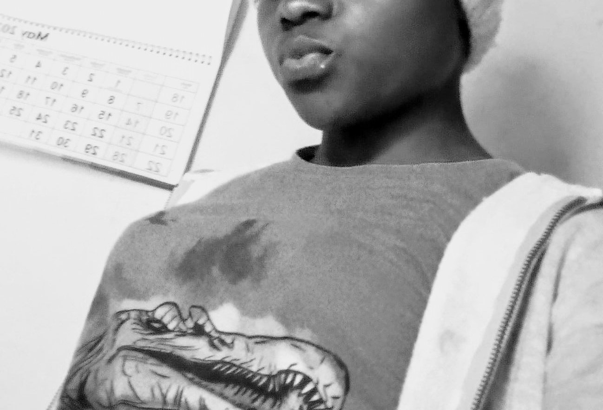

About Us
Off the Beaten Path is a tourism website dedicated to helping travelers discover the lesser-known wonders of the site is under maintainanceld. From hiking through hidden forests to exploring historical ruins, we specialize in off-the-beaten-path experiences that will take your breath away.
Our team is made up of experienced travelers who share a passion for adventure and exploration. We pride ourselves on providing high-quality, reliable information to help you make the most of your trips, whether you're a seasoned adventurer or just starting out.
We hope you enjoy browsing our website! Don't hesitate to get in touch with any questions or suggestions.
Our Team
Our team is made up of experienced travelers who share a passion for adventure and exploration. Here are some of our team members:
Josh Ndemo
Josh is our founder and CEO. He has been traveling for over 20 years and has visited over 50 countries. He loves hiking and exploring new cultures.
Mag Mary
Mary is our CMO. She has been traveling for over 10 years and has visited over 30 countries. She loves trying new foods and meeting new people.
vic cosmo
Cosmo is our CTO. He has been traveling for over 15 years and has visited over 40 countries. He loves photography and hiking.